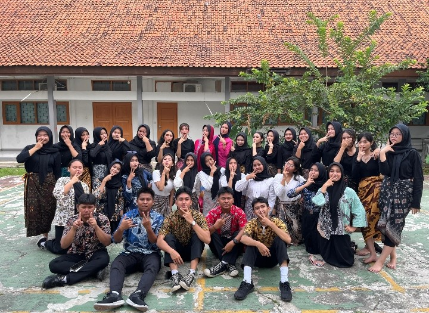
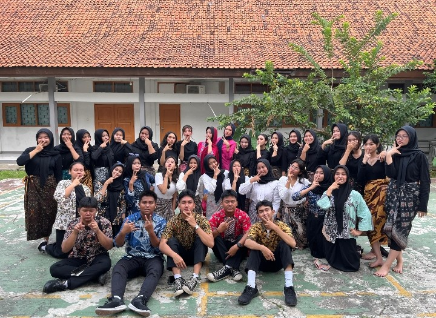

×
XII MP 2: The Management Masters—Merajut Kenangan, Meraih Puncak
Kelas **XII MP 2** bukan sekadar ruang belajar, melainkan **rumah kedua** bagi kami, para calon profesional muda di bidang Manajemen Perkantoran. Tiga tahun perjalanan yang telah kita lalui bersama penuh dengan dinamika, tawa, dan tentu saja, tantangan.
Sejak awal, semangat sinergi dan kolaborasi telah menjadi ciri khas kami. Dari belajar menyusun arsip dengan rapi, mengelola surat menyurat, hingga menguasai teknologi perkantoran modern, setiap hari adalah investasi untuk masa depan. Kami dikenal sebagai kelas yang **serius dalam belajar**, namun selalu punya waktu untuk **tawa dan kekeluargaan**.
Di tahun terakhir ini, fokus kami semakin tajam. Kami tidak hanya berjuang untuk kelulusan, tetapi juga untuk membuktikan bahwa **Manajemen Perkantoran** adalah fondasi penting dalam dunia kerja. Kami adalah tim yang mampu **merencanakan (Plan), melaksanakan (Execute), dan mencapai (Succeed)** setiap target, baik di dalam kelas maupun di luar kegiatan sekolah.


 



Temukan Kami di Instagram
@mptwonestKlik di atas untuk mengunjungi profil kami!